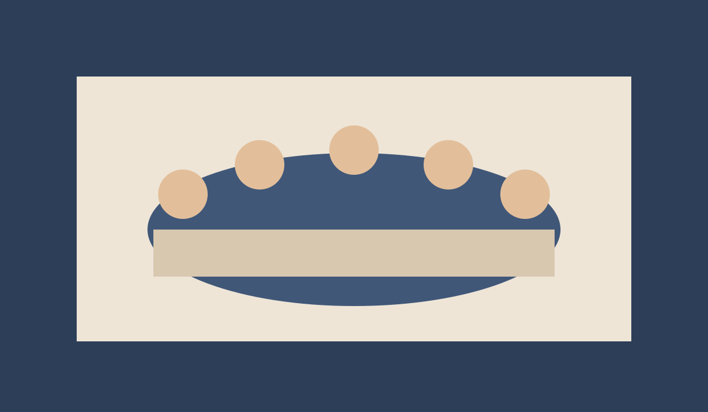

Saada lugu
Jaga oma piirkonna teekonda, mälestust või uut algatust toimetusele.
Vaata näidisartiklit / Beispielartikel ansehenKogukond
Toimetus ja kogukond töötavad koos: lood, teadaanded ja piirkondlikud algatused koonduvad ühele professionaalsele platvormile.

Jaga oma piirkonna teekonda, mälestust või uut algatust toimetusele.
Vaata näidisartiklit / Beispielartikel ansehentoimetus@eestirada.ee
Sirvi rubriike / Rubriken durchsuchen